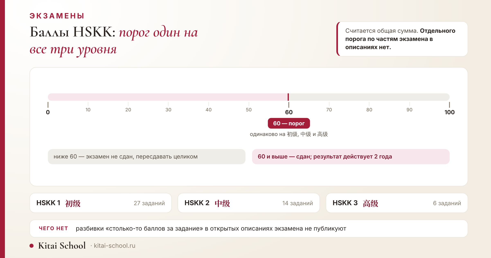
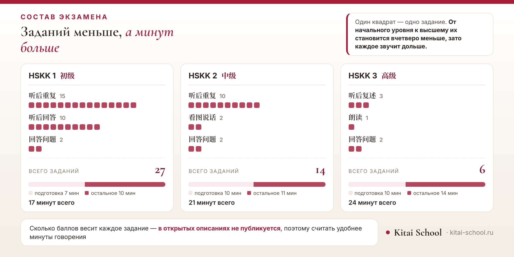

Экзамены
Баллы HSKK: сколько нужно набрать, из чего складывается сотня и почему разбивки по заданиям нет


Вопрос о баллах задают раньше вопроса о заданиях, и это понятно: хочется знать, к чему готовиться и где проходит граница. Ответ на главную часть вопроса простой и одинаковый для всех уровней. А вот на вторую половину — «сколько стоит каждое задание» — честного ответа нет ни у кого, и дальше я объясню почему.
Разберём по порядку: порог, точный состав экзамена в цифрах, срок действия результата и то, чего в открытых описаниях не найти.
Короткий ответ: сколько нужно набрать
Шестьдесят баллов из ста. Порог одинаков на всех трёх уровнях устного экзамена — и на начальном, и на среднем, и на высшем.
| Что | Как устроено |
|---|---|
| максимум | 100 баллов на каждом уровне |
| порог | 60 баллов, одинаково на всех трёх уровнях |
| сумма | считается общая, отдельного порога по частям в открытых описаниях нет |
| срок действия | два года со дня экзамена |
Почему это важно знать заранее. Порог не растёт вместе с уровнем: шестьдесят баллов нужно набрать и на начальном, и на высшем. Растёт не планка в цифрах, а то, что за эти баллы требуется сказать. Человек, который «добирает уровень ради цифры», обычно ошибается: выше уровень — не выше порог, а другой экзамен.
Отдельного порога по частям экзамена в описаниях нет: считается общая сумма. То есть провалить одно задание и всё равно сдать — можно, если остальные вытянут. Это отличает устный экзамен от некоторых письменных форматов, где каждая часть должна набрать своё.
Что входит в экзамен на каждом уровне
Состав заданий различается сильнее, чем кажется по названиям уровней. Вот точные цифры — и они объясняют, почему подготовка к разным уровням выглядит по-разному.
Смотреть стоит не только на число заданий, но и на то, какие части вообще входят в уровень. Два из трёх заданий высшего уровня на других уровнях не встречаются вовсе.
| Уровень | Части и число заданий | Всего | Длится | Из них подготовка |
|---|---|---|---|---|
| HSKK 1 初级 | 听后重复 — 15 · 听后回答 — 10 · 回答问题 — 2 | 27 | 17 мин | 7 мин |
| HSKK 2 中级 | 听后重复 — 10 · 看图说话 — 2 · 回答问题 — 2 | 14 | 21 мин | 10 мин |
| HSKK 3 高级 | 听后复述 — 3 · 朗读 — 1 · 回答问题 — 2 | 6 | 24 мин | 10 мин |
Обратите внимание на последние два столбца. Подготовка — это время, когда вы читаете задание и собираете ответ, но ещё не говорите. На начальном уровне её около семи минут, на двух других около десяти, и даётся она на все задания сразу, а не перед каждым. Распоряжаться этими минутами приходится самому, и это отдельный навык.
Через все три уровня проходит только одно задание — 回答问题, развёрнутые ответы на вопросы. Остальные меняются: повтор услышанного есть на двух первых уровнях, рассказ по картинке только на среднем, чтение вслух и пересказ только на высшем.
Ещё одна деталь, которая сбивает: одинаковые названия не значат одинаковых заданий. Повтор услышанного есть и на начальном уровне, и на среднем, но длина фраз и скорость диктора разные. То же с ответами на вопросы: на начальном уровне спрашивают о быте, на высшем — о вещах, которые и по-русски требуют подумать.
Разбор самих заданий я здесь не повторяю — на каждый уровень у нас отдельная статья: HSKK 1, начальный уровень, HSKK 2, средний уровень и HSKK 3, высший уровень.

Заданий меньше, минут больше
Сопоставьте два столбца таблицы, и увидите главное, что говорят эти цифры о подготовке.
От начального уровня к высшему число заданий падает с двадцати семи до шести, а продолжительность растёт с семнадцати минут до двадцати четырёх. Это значит одно: каждое отдельное задание становится длиннее, и говорить приходится непрерывно.
На начальном уровне двадцать семь коротких выходов: ошиблись в одном — впереди ещё двадцать шесть. На высшем всего шесть, и каждый весит заметно больше. Там нельзя «отыграться на следующем», потому что следующих почти не осталось.
Отсюда практический вывод, который редко формулируют. На начальном уровне тренируют скорость реакции, на высшем — выносливость. Это разные навыки, и готовятся к ним по-разному.
Чего в открытом доступе нет
Теперь к той части вопроса, на которую в интернете отвечают охотнее всего, — и чаще всего неправду.
| Чего не найти | Как есть на самом деле |
|---|---|
| сколько баллов стоит каждое задание | разбивка по заданиям в открытых материалах не публикуется |
| точная шкала проверяющего | критерии в баллах за произношение, беглость и полноту открыто не выложены |
| день публикации результатов | описания расходятся: называют и около месяца, и примерно 25 рабочих дней |
Раскладки вроде «за повтор дают столько-то, за картинку столько-то» встречаются на форумах и в чужих статьях. Проверить их не по чему: открытой разбивки нет, и совпадение этих чисел между собой говорит лишь о том, что их переписывают друг у друга.
Я таких чисел не называю. Строить подготовку на выдуманной раскладке — значит потратить недели на то, что может оказаться устроено иначе.
Почему это не мешает готовиться
Ученик перед HSKK 2 требовал от меня цифру: сколько баллов стоит 看图说话. Логика была понятная и даже разумная — распределить силы, подналечь на дорогое задание и вытянуть на дешёвых.
Я сказала прямо: такой разбивки в открытом доступе нет. Назвать её наугад означало бы построить всю подготовку на выдуманном числе, а потом обнаружить на экзамене, что считали не то.
Вместо этого мы посчитали другое — время. Сложили, сколько секунд на каждом задании ему придётся говорить вслух, и посмотрели, где этих секунд больше всего. Рассказ по картинке оказался самым длинным куском говорения, и именно там молчание слышно сильнее всего: запись не отматывается, пауза просто пишется как пустота.
Готовились по минутам говорения, а не по предполагаемым баллам. На картинку отвели больше всего тренировок просто потому, что она дольше звучит. Сдал с запасом.
Я с тех пор отвечаю так всем, кто просит «расписать баллы»: пока разбивки нет, любая такая раскладка — чужая догадка, пересказанная уверенным тоном. Секунды же можно посчитать самому, и они не врут.
Вывод, который я делаю: распределять подготовку честнее по времени, которое придётся заполнить голосом, а не по баллам, которых никто не видел.
HSKK 4: уровня, которого нет
Запрос «HSKK 4» встречается регулярно, поэтому отвечу отдельно: уровней у устного экзамена три, четвёртого не существует: цифру 4 обычно переносят сюда из письменного HSK.
Путаница понятная. У письменного экзамена шесть уровней, и HSK 4 — один из самых востребованных. У устного уровней три, и нумерация своя. Когда человек сдал письменный четвёртый и идёт за устным, цифра четыре переносится по привычке.
Что делать, если «HSKK 4» требуют от вас. Уточните, что именно имеется в виду: письменный HSK 4 с устным дополнением или конкретный уровень устного экзамена. Чаще всего за этой формулировкой стоит связка «HSK 4 плюс HSKK среднего уровня», и её стоит подтвердить до оплаты регистрации.
Что оценивают на слух
Шкалы в баллах у меня нет, но что именно слушают — известно из описаний экзамена и из практики. Это понятность речи, её связность и полнота ответа.
- Понятность. Разборчивость слогов и тонов важнее богатства лексики: непонятое слово не засчитывается никак.
- Связность. Ответ должен держаться как целое, а не распадаться на отдельные верные фразы.
- Полнота. Отведённое время нужно заполнить. Короткий безупречный ответ проигрывает полному с шероховатостями.
Подробнее о том, как это выглядит внутри каждого задания, — в общей статье про подготовку к устному экзамену.
Сколько действует результат
Два года со дня экзамена. Правило общее для китайских языковых тестов, и для устного оно такое же, как для письменного.
Два года — срок короткий, и это стоит учитывать при планировании. Сдавать за год до подачи документов рискованно: пока идёт поступление, срок может подойти к концу. Про сам документ и что он подтверждает — в статье про сертификат HSK.
Когда приходят баллы
Здесь я вынуждена ответить менее определённо, чем хотелось бы. Описания расходятся: где-то говорится, что результаты публикуют примерно через месяц, где-то — что примерно через двадцать пять рабочих дней.
Разница невелика, но если вы считаете дни до подачи документов, она может оказаться существенной. Поэтому совет простой: смотрите расписание своего экзаменационного центра, а не общие описания. Центры публикуют даты публикации результатов заранее, и в случае праздников сроки сдвигаются.
Сам сертификат и его бумажная версия приходят позже электронного результата — это отдельный срок, и он тоже зависит от центра.
Практический совет. Если результат нужен к конкретной дате — к подаче документов, к визовому сроку, к дедлайну программы, — отсчитайте назад не месяц, а два: месяц на результат и запас на бумажный документ и на возможный сдвиг из-за праздников. Это самая частая причина, по которой люди сдают экзамен вовремя, а документ получают поздно.
Что это значит для подготовки
Соберу выводы, которые следуют из цифр.
- Считайте не баллы, а время говорения. Разбивки нет, а продолжительность заданий известна. Готовьтесь там, где говорить придётся дольше всего.
- Не рассчитывайте «добрать на лёгком». Сумма общая, но на высшем уровне заданий всего шесть, и провал одного тянет вниз заметно сильнее, чем на начальном.
- Планируйте запас по сроку. Два года и месяц ожидания результата — вместе это съедает больше времени, чем кажется.
- Готовьтесь к своему уровню. Задания называются похоже, а планка разная: приёмы с начального на среднем не работают.
Про сами приёмы — каркас ответа, клише и что делать, если слово вылетело, — у нас есть общая статья: подготовку к устному экзамену.
И ещё одно, что следует из общей суммы. Пропущенное задание не обнуляет экзамен, но и не проходит бесследно. Молчание в одном месте придётся компенсировать в другом, а чем выше уровень, тем меньше этих других мест. На высшем уровне пропустить одно задание из шести — значит отдать заметную часть всего, что вы могли сказать.
Отсюда правило, которое я повторяю перед каждым экзаменом: говорить хоть что-то всегда лучше, чем молчать. Неточный ответ по теме — это не ноль. Пауза — ноль гарантированно, и запись не отматывается.
Частые ошибки в понимании баллов
- «Нужно набрать 60 % в каждой части». Нет, считается общая сумма; отдельного порога по частям в описаниях нет.
- «За повтор дают больше, чем за картинку». Это чья-то догадка: открытой разбивки не существует.
- «HSKK 4 сложнее HSKK 3». Уровней три, четвёртого нет.
- «Результат бессрочный». Два года, и отсчёт идёт от дня экзамена, а не от получения документа.
- «Чем выше уровень, тем длиннее экзамен, значит, и заданий больше». Наоборот: заданий меньше, но каждое длиннее.
Чего в статье нет намеренно
- Разбора самих заданий и приёмов подготовки — на каждый уровень есть отдельная статья, ссылки стоят в тексте.
- Раскладки баллов по заданиям. Её нет в открытом доступе, и выдумывать я не буду.
- Шкалы проверяющего. По той же причине.
- Точной даты публикации результатов. Описания расходятся, и я называю обе версии вместо одной уверенной.
- Процентов сдавших и статистики. Подсчётов, которым я готова доверять, не нашла.
- Ссылок на официальный портал экзамена. Из рабочей среды он у меня не открылся, а цитировать страницу, которую я не видела, неправильно.
Собираетесь сдавать устный? На занятиях мы считаем минуты вашего говорения и тренируем именно те задания, которые дольше всего звучат, — это даёт больше, чем попытки угадать раскладку баллов.
Записывайтесь на пробное занятие — посмотреть расписание и формат можно здесь: онлайн-курсы китайского.
Частые вопросы (FAQ)
Сколько баллов нужно, чтобы сдать HSKK?
Шестьдесят из ста. Порог одинаков на всех трёх уровнях: и на начальном, и на среднем, и на высшем. Отдельного порога по частям экзамена в описаниях нет — считается общая сумма.
Сколько баллов дают за каждое задание HSKK?
Разбивки по заданиям в открытом доступе нет, и я не буду называть числа, которых не видела. Известно, что максимум — сто баллов, а порог — шестьдесят. Раскладки вроде «за повтор столько-то, за картинку столько-то» встречаются в интернете, но это чужие догадки.
Сколько заданий на каждом уровне HSKK?
На начальном двадцать семь: пятнадцать повторов, десять коротких ответов и два развёрнутых вопроса. На среднем четырнадцать: десять повторов, два рассказа по картинке и два вопроса. На высшем шесть: три пересказа, одно чтение вслух и два вопроса.
Сколько длится устный экзамен?
Начальный уровень — семнадцать минут, средний — двадцать одна, высший — двадцать четыре. В это время входит подготовка: около семи минут на начальном и около десяти на двух других. Говорите вы заметно меньше, чем длится экзамен.
Есть ли HSKK 4?
Нет. У устного экзамена три уровня: 初级, 中级 и 高级, то есть HSKK 1, 2 и 3. Цифру четыре обычно переносят сюда из письменного HSK, где уровней шесть. Если от вас требуют «HSKK 4», уточните, какой именно экзамен имеется в виду.
Сколько действует результат HSKK?
Два года со дня экзамена. Это общее правило для китайских языковых тестов, и для устного оно такое же, как для письменного. Если документ нужен для поступления, смотрите не только срок, но и то, какой уровень требует конкретная программа.
Источники
- Максимум в сто баллов, порог в шестьдесят, состав заданий по уровням и продолжительность экзамена приведены по описаниям уровней, которые публикуют университетские экзаменационные центры.
- Срок действия результата в два года назван по описаниям правил экзамена.
- Разбивки баллов по заданиям не привожу: в открытых материалах её нет, а чужие раскладки проверить не по чему.
- Шкалу проверяющего в баллах не называю по той же причине.
- Дату публикации результатов даю с оговоркой: описания расходятся, и я привожу обе версии, советуя смотреть расписание своего центра.
- На официальный портал экзамена не ссылаюсь: из рабочей среды он не открывается, а цитировать невиденное я не стану.
- Процентов сдавших не называю — надёжных подсчётов не нашла.
- Разбор заданий, приёмы подготовки и сам сертификат вынесены в отдельные материалы блога; ссылки расставлены по тексту.
- Случай с подсчётом минут вместо баллов — из практики Kitai School, имя ученика не называю.